사용 가이드
GPU를 잠깐 빌려 KataGo로 바둑을 분석하는 서비스입니다. 폰·태블릿·PC 브라우저에서 모두 됩니다.
한눈에 보기
- 충전하기메뉴의 충전(휴대폰은 위쪽 잔액 칸) → 금액을 골라 요청하고, 나온 계좌로 입금하세요.
- GPU 시작메뉴 GPU → 목록에서 GPU 하나를 누르고 화면 아래 시작. 보통 1~3분이면 준비됩니다.
- 분석하기분석 화면 열기 → 기보를 열거나 돌을 두고 ▶ 분석 시작.
- 꼭 끄기다 쓰면 GPU 종료. 누르는 순간 요금이 멈춥니다.
홈과 메뉴
로그인하면 홈(현황판)이 나오고, 메뉴로 각 화면에 갑니다.
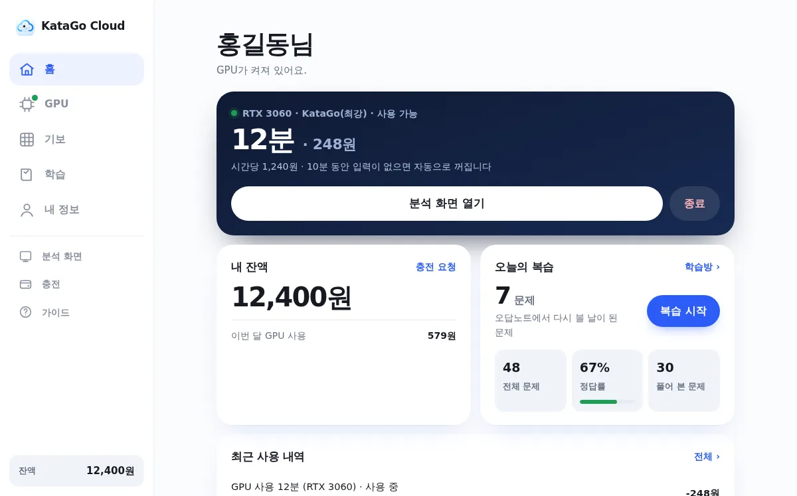
- 메뉴 — 가로 화면(PC·태블릿·눕힌 휴대폰)은 왼쪽, 세로 휴대폰은 아래에 홈 · GPU · 기보 · 학습 · 내 정보가 있습니다. 왼쪽 메뉴 아래에는 분석 화면·충전·가이드와 잔액이 있고, 휴대폰은 위쪽 막대에 분석 화면과 잔액(누르면 충전)이 있습니다.
- 홈 — GPU가 꺼져 있는지·준비 중인지·켜져 있는지(켜져 있으면 쓴 시간·요금, 분석 화면 열기, 종료), 내 잔액과 확인 중인 충전 요청, 이번 달 GPU 사용 요금, 오늘 복습할 오답노트 문제, 최근 사용 내역을 한눈에 봅니다.
- GPU — GPU를 빌려 분석 화면에서 직접 분석합니다. → GPU 빌리기
- 기보 — 저장한 기보를 GPU 없이 다시 봅니다(→ 내 기보). 맨 위 기보 분석으로 기보 여러 개를 한꺼번에 분석해 저장합니다(→ 기보 분석).
- 학습 — 내 실수로 만든 오답노트를 풉니다. → 학습방·오답노트
GPU가 켜져 있는 동안 기보·학습·내 정보 화면에 가 있으면 아래에 작은 막대(GPU · 쓴 시간 · 요금)가 떠서, 바로 분석 화면으로 돌아갈 수 있습니다. 메뉴의 분석 화면을 누르면 GPU 없이 빈 분석 화면이 열립니다. 저장된 기보 보기·기보 기록은 GPU 없이도 됩니다.
충전
요금은 미리 충전한 잔액에서 나갑니다.
- 메뉴의 충전을 누릅니다(휴대폰은 위쪽 잔액 칸, 또는 홈의 충전 요청).
- 금액(1,000원 5,000원 10,000원 또는 직접 입력, 1,000원 단위·최대 5만원)과 입금자명을 넣고 충전 요청을 누릅니다.
- 화면에 나온 계좌로 그 금액을 보냅니다. 입금자명을 요청할 때와 같게 해 주세요.
- 관리자가 입금을 확인하면 잔액이 바로 늘어납니다. 충전 화면과 내 정보 → 충전·사용 내역에서 볼 수 있습니다. 요청할 때 알림을 허용했다면 승인·거절 결과가 휴대폰 알림으로도 옵니다. 관리자가 남긴 메모가 있으면 알림과 충전 화면의 최근 요청에 함께 보입니다.
확인 중인 요청은 한 번에 하나입니다. 금액을 잘못 넣었으면 입금하기 전에 요청 취소 후 다시 요청하세요. 48시간 안에 확인되지 않은 요청은 만료됩니다. 궁금한 점은 충전 화면 아래 카카오톡 오픈채팅으로 문의하세요.
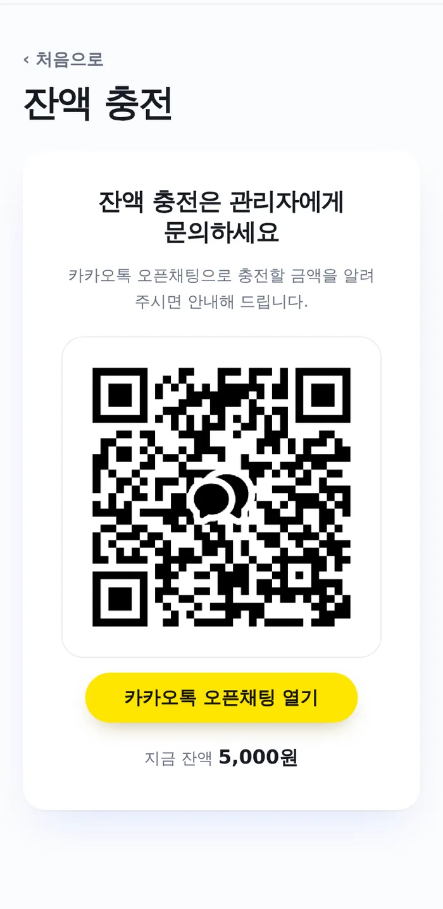
GPU 빌리기
위에서 모델을 고르고, 목록에서 GPU를 누르고, 화면 아래 시작.
- 지역 — 한국에 가까울수록 반응이 빠릅니다.
- GPU — 숫자가 클수록 빠르고 비쌉니다(3060 < 5070 Ti < 5090).
- 시간당 — 1시간 요금. 실제로는 쓴 분만큼만.
- 성능/$ — 가격 대비 성능. 높을수록 같은 돈으로 더 많이 봅니다.
- ⚡ — 최근에 써 본 서버라 더 빨리(보통 1분 안팎) 켜집니다.
- 모델 — 잘 모르겠으면 기본값(Transformer 대형).
내 기기로 분석 — GPU 대여 화면 맨 아래 '내 기기로 분석'의 시작을 누르면 GPU를 빌리지 않고 지금 쓰는 PC·폰으로 분석합니다(요금 없음). GPU를 빌릴 때처럼 그 자리에 준비 단계(모델 내려받기 → 엔진 준비·검증 → 분석 준비 완료)가 보이고, 끝나면 분석 화면 열기를 눌러 들어갑니다. 그래픽을 쓸 수 있으면 그래픽으로, 아니면 CPU로 자동으로 돌립니다. 모델은 시작 버튼 옆에서 KataGo(빠름) 또는 KataGo(균형)을 고릅니다. 처음 한 번 모델 파일(빠름 약 65MB, 균형 약 160MB)을 내려받아 기기에 저장합니다(와이파이 권장). 균형은 더 강하지만 더 느립니다. 9줄·13줄 판은 그 판 크기 전용으로 계산해 19줄보다 훨씬 빠르며, 처음 쓸 때 판 크기용 파일(5~21MB)을 한 번 더 받습니다. 분석 화면의 기능(자동분석·대국 리포트·AI대국·오답노트 등)은 그대로 쓰지만, 빌린 GPU보다 훨씬 느립니다(폰은 초당 수십 visits 안팎).
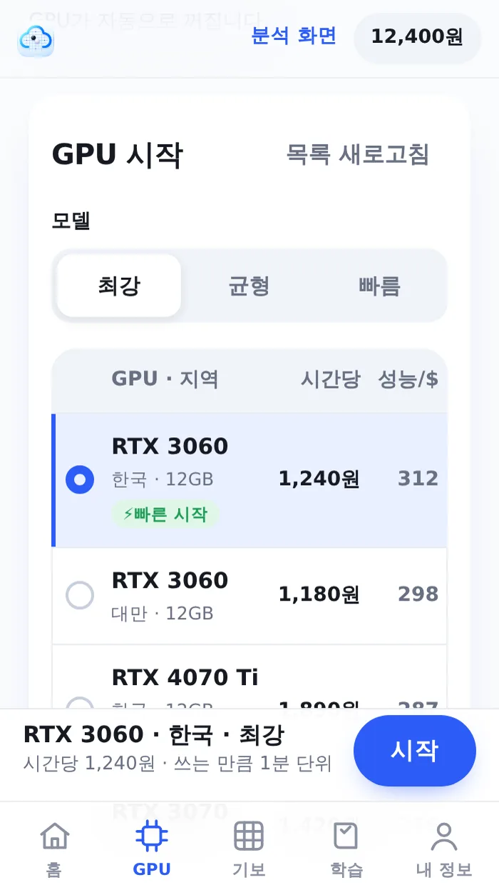
준비 과정
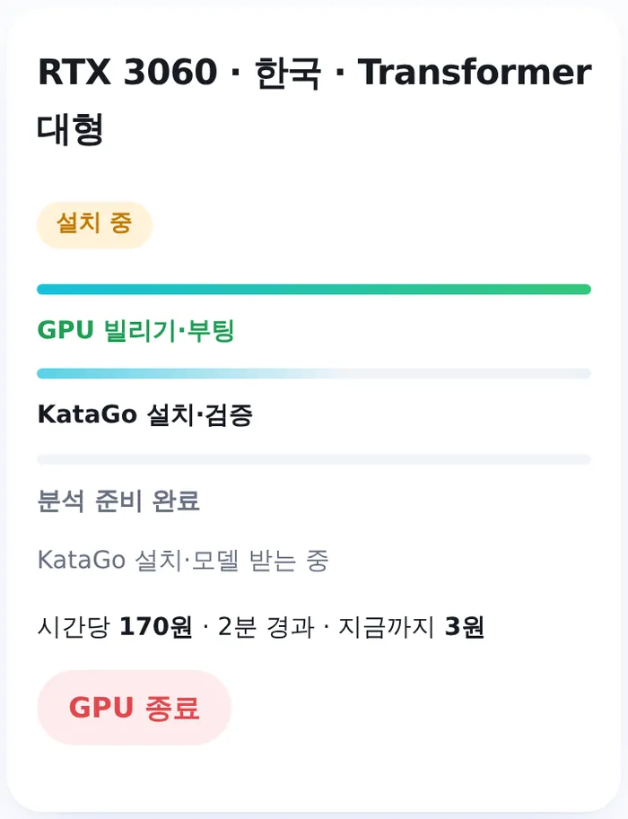
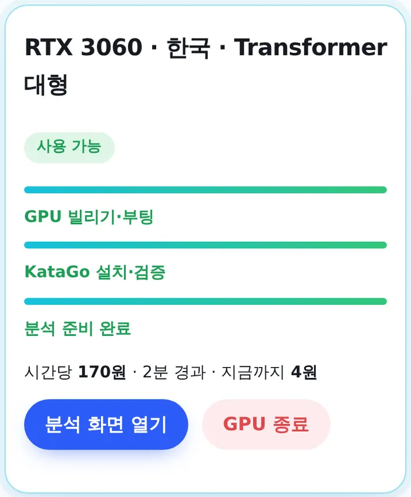
기다리는 동안 다른 앱에 가 있어도 됩니다. 알림을 허용하면 준비가 끝날 때 알려 줍니다(앱 설치·알림).
자세히: 목록에 뜨는 GPU, 대신 빌리기, 실패했을 때
- 지금 빌릴 수 있는 GPU 가운데 가격에 비해 성능·안정성이 좋은 것만 추려 보여 줍니다. 반응이 느린 먼 지역(중국·호주·미국·유럽 등)은 뺐습니다.
- VRAM은 그래픽카드 메모리입니다. 목록의 GPU는 모두 KataGo에 충분합니다. CPU 칸은 폰에서 숨겨집니다.
- 큰 모델일수록 한 수를 더 정확하게 보지만, 설치가 조금 오래 걸리고 1초에 보는 수(visits/s)가 줄어듭니다.
- 고른 GPU를 다른 사람이 먼저 빌려 가면, 같은 지역·같은 GPU 중 시간당 10원까지 비싼 것을 자동으로 대신 빌립니다(최대 4대 시도). 그래도 없으면 "먼저 빌려 갔다"는 안내가 뜨고 요금은 나가지 않습니다.
- 빌리지 못한 GPU는 1시간, 빌렸지만 준비에 실패한 GPU는 24시간 동안 목록에서 빠집니다.
- 한 계정은 한 번에 GPU 하나만 씁니다. 쓰는 동안 GPU 대여 화면에 내 GPU 카드와 쓴 시간·요금이 보입니다.
요금과 자동 종료
쓴 시간만큼 목록의 시간당 요금으로 계산하고, 1분마다 잔액에서 빠집니다.
| 계산 | 시간당 170원 × 30분 = 85원(1원 미만은 올림). 준비하는 1~3분도 포함됩니다. |
| 시작 조건 | 그 GPU로 약 15분 쓸 만큼의 잔액이 있어야 합니다. |
| 준비 실패 | 한 번도 사용 가능이 되지 못하고 실패하면 요금을 전부 자동 환불합니다(사용 내역에 "준비 실패 환불"). |
저절로 꺼지는 경우
- 10분 동안 분석 요청이 없을 때 — 탭만 열어 둔 것은 사용으로 치지 않습니다. 자동분석·대국 리포트·기보 분석이 도는 동안은 사용 중입니다.
- 잔액이 0원이 됐을 때
- 준비가 너무 오래 걸릴 때 — 문제가 있는 GPU로 보고 끕니다.
직접 끄기
GPU 종료는 네 곳에 있습니다: 홈의 GPU 카드(종료) · GPU 화면 · 분석 화면 위쪽 막대(PC) · 폰 분석 화면의 ☰ 메뉴 맨 위 GPU 칸. GPU 없이 연 분석 화면에서도 켜진 GPU가 있으면 같은 자리에 보입니다.
분석 화면
배치는 LizzieYzy(YZY)와 같습니다. 수를 넘기면 후보수가 바뀌고, 후보수에 마우스를 올리면(폰은 길게 누르면) 예상 수순이 보입니다.
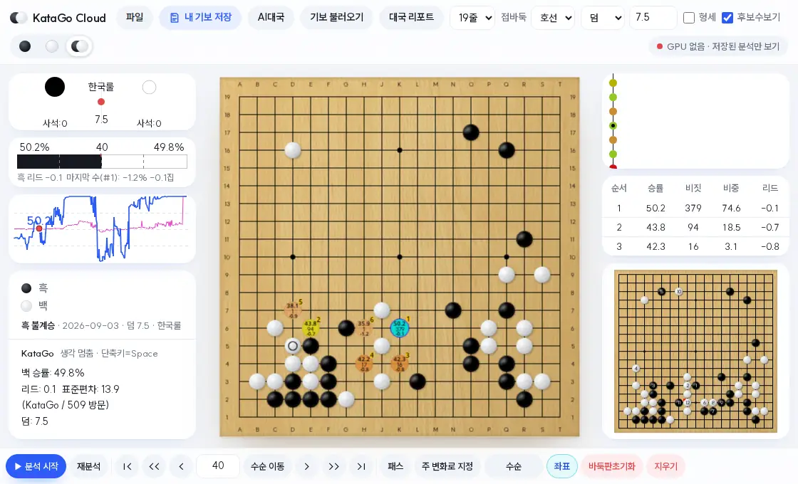
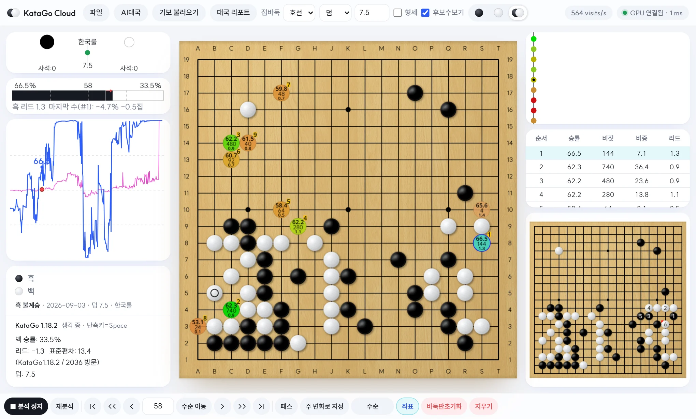
1 2 3 4 5 6 7 8 9 10- 위쪽 막대 — 기보 ▾ · 바둑판 ▾ · 보기 ▾ 메뉴, AI대국, 대국 리포트, 내 기보 저장
- 사석·덤 — 따낸 돌, 덤, 지금 차례
- 승률 칸 — 흑·백 승률, 리드(몇 집 앞섬)
- 승률 그래프 — 누르면 그 수로 이동
- 대국 정보 — 대국자·결과, 엔진 상태
- 바둑판 — 후보수와 참고도
- 변화도 — 기보의 갈래
- 후보표 — 승률·비짓·비중·리드
- 미리보기 판 — 고른 후보의 수순
- 아래쪽 막대 — 분석 · 수 이동 · 패스 · 계가 · 편집 ▾
후보수 읽는 법
- 하늘색 + 파란 테두리 = AI 1순위("블루스팟"). 초록일수록 많이 본 수, 빨강·옅을수록 덜 본 수입니다.
- 노란 숫자는 순위(1~9)입니다.
휴대폰(세로 화면)
바둑판을 크게 보여 주고, 나머지 기능은 오른쪽 아래 ☰ 메뉴에 모았습니다.
- 바둑판 아래에는 수 이동 버튼과 분석 · 자동분석 · ☰ 메뉴만 둡니다. 가로로 돌려도 같고, 바둑판이 화면 높이만큼 커집니다.
- 메뉴는 GPU · 기보 · SGF 파일 · 복기 · 대국 · 바둑판 · 보기 · 편집 칸입니다.
- 맨 위 GPU 칸: 연결 상태, 쓴 시간·요금, GPU 종료.
- 보기 칸의 버튼(후보수·형세·승률 가리기·승률 막대·승률 그래프·수순·좌표)은 켜진 것이 파랗게 보입니다.
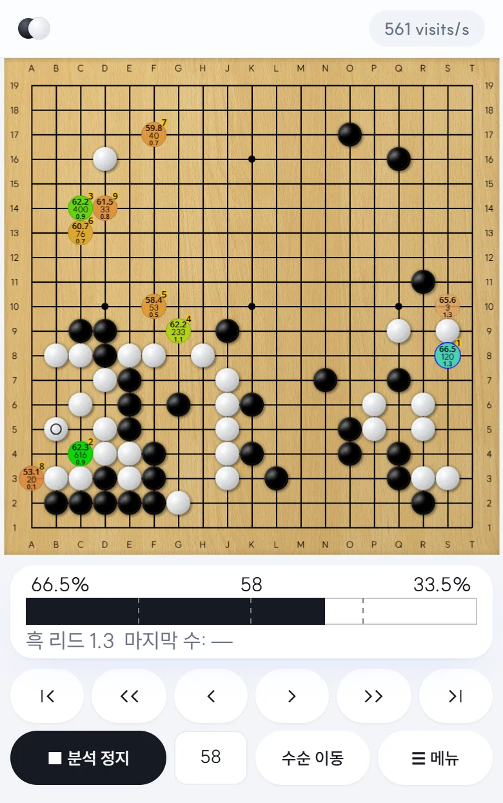
자세히: 메뉴 화면 그림, 각 칸의 버튼
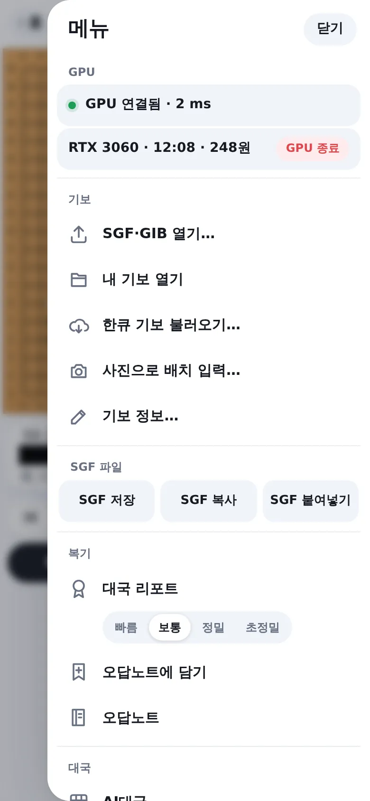
- 위쪽 막대(PC): 기보 ▾(SGF·GIB 열기, 내 기보 열기, 한큐 기보 불러오기, 사진으로 배치 입력, SGF 저장·복사·붙여넣기, 기보 정보, 오답노트에 담기, 오답노트), 바둑판 ▾(줄 수, 접바둑, 덤, 돌 놓기), 보기 ▾(후보수보기, 형세, 승률 가리기, 수순, 좌표), AI대국, 대국 리포트, 내 기보 저장. 오른쪽 끝은 초당 탐색 수(visits/s), GPU 시간·요금·종료, 연결 상태(초록 점 = 연결됨, 숫자 = 응답 시간).
- 아래쪽 막대(PC): 분석 시작/정지, 자동분석, 처음·10수·이전·수 번호·다음·10수·끝, 패스, 계가, 편집 ▾(주 변화로 지정, 이 수부터 지우기, 바둑판 초기화).
- 보기 메뉴와 폰 메뉴에서 켜고 끄는 버튼(수순·좌표·형세 등)과 세기·돌 놓기 버튼은 눌러도 메뉴가 닫히지 않아 여러 번 바꿔 볼 수 있습니다.
- 승률과 리드는 표시하는 순간 차례인 쪽 기준입니다. 왼쪽 승률 칸과 그래프는 흑·백 각각의 승률입니다.
조작법
누르면 두고, 올리거나 길게 누르면 참고도, 휠·두 손가락으로 수를 넘깁니다.
| 하고 싶은 일 | PC(마우스·키보드) | 폰·태블릿(터치) |
|---|---|---|
| 돌 두기 | 바둑판 클릭 | 짧게 톡 |
| 참고도 보기 | 후보수 위에 올리기 | 길게 누르기(떼도 남음, 다른 곳 누르면 사라짐) |
| 다음 / 이전 수 | → ← · 휠 아래/위 | 두 손가락 아래로 / 위로 |
| 한 수 뒤로 | 바둑판 오른쪽 클릭 | 세 손가락 짧게 톡 |
| 처음 / 끝 | Home End | ⏮ ⏭ 버튼 |
| 분석 시작 / 멈춤 | Space | ▶ 분석 시작 |
| 원하는 수로 | 승률 그래프·변화도를 누르거나, 아래 막대의 수 번호 칸에 번호를 적고 Enter(폰은 입력을 마치면 바로 이동) | |
자세히: 노트북 터치패드, 후보표
- 노트북 터치패드는 폰과 같게 움직입니다: 톡 = 바로 착수(살짝 톡도), 두 손가락 아래로 = 다음 수, 두 손가락 톡 = 한 수 뒤로. (Windows 스크롤 방향을 바꿔 두었다면 반대로 움직입니다.)
- 후보표 한 번 클릭 = 그 후보의 수순을 미리보기 판에, 두 번 클릭 = 그 수를 둡니다.
- 이미 둔 수와 다른 곳에 두면 새 변화(갈래)가 생깁니다.
분석 기능
▶ 분석 시작은 지금 국면을 계속 분석하고, 자동분석은 한 판 전체를 차례로 분석해 그래프를 채웁니다.
세기(자동분석·대국 리포트 공통)
| 세기 | 한 수에 | 쓰임 |
|---|---|---|
| 빠름 | 250 visits | 흐름만 볼 때 |
| 보통 | 500 visits | 기본값 · 275수 한 판 약 2분(RTX 3060) |
| 정밀 | 1000 visits | 더 정확 |
| 초정밀 | 5000 visits | 중요한 대국 · 정밀보다 약 5배 오래(한 판 약 20분) |
- 이미 그 세기 이상 분석된 수는 건너뜁니다. 다 분석돼 있으면 버튼이 재분석이 됩니다.
- 진행 중 버튼(■ 자동분석 취소 n/N)을 누르면 멈추고, 그때까지의 결과는 남습니다.
- 다른 변화도를 두며 연구하는 중이어도 자동분석은 항상 주 변화(본선)를 분석합니다. 연구한 변화도를 분석하려면 그 변화에서 주 변화로 지정을 누른 뒤 자동분석하세요.
보기와 편집
| 형세 | 흑·백 영역을 칠하고 "형세 흑 N집 우세"를 보여 줍니다. |
| 승률 가리기 | 승률·후보수·그래프·형세·변화도 색을 모두 가립니다. 저장된 기보를 AI 평가 없이 먼저 스스로 복기할 때 씁니다. 분석값은 지워지지 않고, 체크를 풀면 바로 다시 보입니다. 다음에 열어도 체크한 상태가 유지됩니다(휴대폰은 메뉴 → 보기). |
| 후보수보기 · 수순 · 좌표 | 후보수 켜고 끄기 · 수 번호(전체 → 마지막 수만 → 끔) · 가장자리 좌표 |
| 바둑판 | 19줄 · 13줄 · 9줄. 고르면 그 크기의 빈 판으로 새로 시작합니다. |
| 접바둑 · 덤 | 호선 · 정선 · 2~9점(9줄은 5점까지). 덤 또는 역덤, 기본 6.5집. |
| ● ○ ◐ | 흑만 / 백만 / 번갈아 놓기(배치·사활 만들 때) |
| 패스 · 이 수부터 지우기 | 차례 넘기기 · 지금 수와 그 뒤를 지우기(편집 ▾) |
| 주 변화로 지정 | 보고 있는 갈래를 본선으로(자동분석·리포트는 본선을 따라감, 편집 ▾) |
| 바둑판 초기화 | 빈 호선 판(덤 6.5)으로 |
자세히: 판 크기, PDA(접바둑 보정)
- 판 크기: 둔 수가 있으면 먼저 묻습니다. SGF·내 기보·공유 링크는 기보에 적힌 크기로 열리고, 저장할 때 크기도 함께 저장됩니다. 초반·중반·종반은 판 넓이에 맞춰 나눕니다(19줄 50·150수, 13줄 23·70수, 9줄 11·34수까지).
- PDA: 치수나 덤 때문에 한쪽이 크게 불리하면, AI가 불리한 쪽을 둘 때 KataGo가 직접 접바둑을 둘 때처럼 더 적극적으로 두도록 보정합니다(자동). AI대국의 AI 차례에만 적용되고 그때 막대 아래에 "PDA 값"이 보입니다. 일반 분석·복기·승률 그래프·자동분석·대국 리포트는 보정 없이 분석해 집차이·승률이 한 기준으로 이어집니다.
- 위쪽 막대의 N visits/s는 1초에 몇 번 탐색하는지입니다. 자동분석이 함께 돌면 GPU를 나눠 써서 느려집니다.
대국 리포트
한 판을 수마다 AI와 비교해, 흑·백이 얼마나 AI처럼 뒀는지와 어디서 손해 봤는지 보여 줍니다.
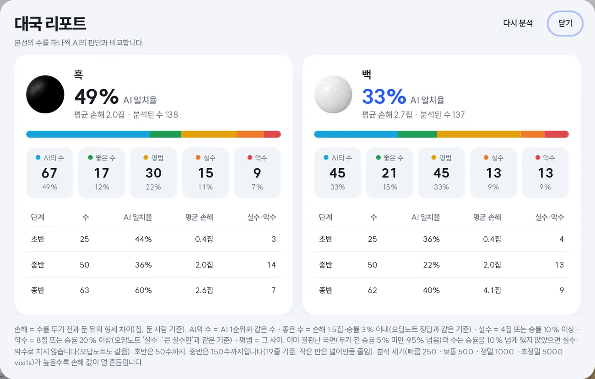
| 등급 | 기준(한 수에 잃은 것) |
|---|---|
| AI의 수 | AI 1순위와 같은 수 |
| 좋은 수 | 1.5집 · 승률 3% 이내 |
| 평범 | 좋은 수와 실수 사이 |
| 실수 | 4집 또는 승률 10% 이상 |
| 악수 | 8집 또는 승률 20% 이상 |
- 이미 결판난 국면(두기 전 승률 5% 미만·95% 넘음)의 수는 승률을 10% 넘게 잃지 않았으면 실수로 치지 않습니다.
- 아래 표에서 초반·중반·종반 중 어디가 약한지 보고, 그 단계의 오답노트를 풀어 보세요.
자세히: 걸리는 시간, 취소, 다시 분석
- 분석되지 않은 수가 있으면 세기를 고르고 분석부터 합니다. 창을 닫아도 계속 진행되고(버튼에 대국 리포트 n/N), 끝나면 아래 막대에 알림이 뜹니다.
- 도중에 분석 취소를 누르면 그때까지 분석된 수로 리포트를 보여 주고, 다시 누르면 남은 수부터 이어서 합니다.
- 모든 수가 이미 분석돼 있으면(자동분석을 해 둔 기보 등) 바로 결과가 나옵니다. 다시 분석은 지금 세기로 전부 다시 합니다.
- 단·급은 매기지 않습니다. 손해는 AI가 본 형세 차이라 검토 참고용이며, 세기가 높을수록 덜 흔들립니다.
AI대국
KataGo와 두거나, AI끼리 두는 것을 구경합니다.
- 대국: AI와 대국 / AI끼리 대국
- 시작: 새 대국 / 지금 판에서 이어서 두기
- 바둑판·접바둑·덤: 19·13·9줄, 호선·정선·접바둑
- AI세팅: "N초당 한 수" 또는 "N visits당 한 수"
- AI분석 보기: 대국 중 후보수·승률을 보여 줄지(사람과 둘 때 기본 끔)
AI는 1순위 수를 둡니다. 양쪽이 연달아 패스하면 끝나고 KataGo 판정이 결과로 남습니다.
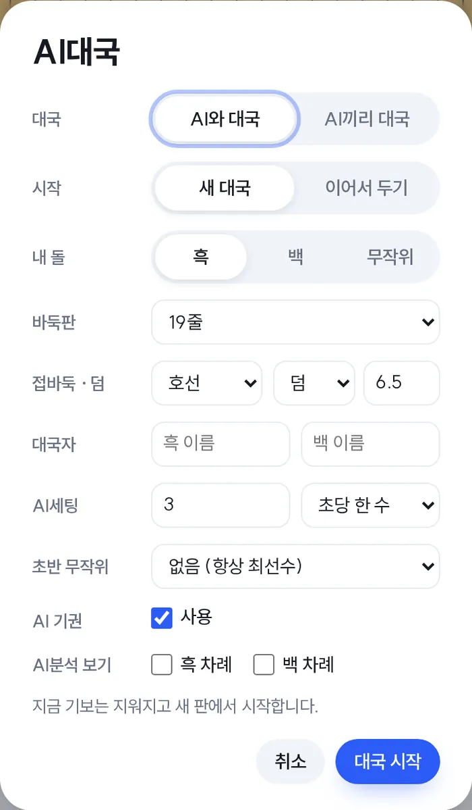
자세히: 초반 무작위, AI 기권
- 초반 무작위: 10·20·40수까지 상위 3후보 중 하나를 골라 매번 다른 판이 되게 합니다.
- AI 기권: 켜 두면 LizzieYzy와 같은 규칙으로 돌을 던집니다(150수 이후 연속 2수 동안 AI 승률 5% 미만). 접바둑·역덤처럼 불리한 쪽을 든 AI는 치수만큼 따라잡을 시간을 둡니다.
- 대국 중 버튼은 ■ 대국 중지가 되고, 설정은 다음에도 남습니다.
- 시간: AI대국 창에서 고릅니다(예: 10분 + 초읽기 30초 3회). 바둑판 위 막대(휴대폰은 바둑판 아래)에 흑·백 시계가 나오고 둘 차례인 쪽이 강조됩니다. 내 초읽기를 모두 쓰면 시간패입니다. AI는 남은 시간을 나눠 쓰며, 시간이 되면 AI 세팅보다 먼저 둡니다.
- 계가 · 기권: 패스 옆 계가를 누르면 AI가 죽은 돌을 판정하고(흐리게 표시) 집에 작은 네모를 칩니다. 판정이 틀리면 그 돌을 눌러 죽은 돌 ↔ 산 돌을 바꿉니다. 한국룰대로 집 + 사석 + 덤을 세어 결과(예: 흑 3.5집승)가 나오고, 대국 중이면 이 결과로 대국 끝내기, 기보를 볼 때는 결과 기록을 누릅니다. 계가 창이 열린 동안 AI와 시계는 멈춥니다. 대국 중의 기권은 내 돌을 던져 상대 불계승으로 끝냅니다(휴대폰은 메뉴 → 대국).
내 기보
분석한 기보를 계정에 저장해 두고, GPU 없이 언제든 다시 봅니다.
- 저장: 분석 화면 위쪽 파란 내 기보 저장. 승률·후보수도 함께 저장됩니다(100판까지).
- 보기: 메뉴 기보 → 분류 카드 → 기보를 누르면 저장된 분석과 함께 열립니다.
- 이어서 분석: GPU가 켜져 있으면 그 GPU로 열리고, 모자란 수만 분석합니다.
- 분류: ＋ 새 분류로 "한큐 기보", "오프라인 대국"처럼 나눠 둡니다(30개까지).
- 타이젬 기보 자동: 윈도우 PC 앱을 쓰면 그 PC에서 둔 타이젬 대국이 타이젬 기보 분류에 저절로 들어옵니다(아래 앱 설치). 이렇게 들어온 기보는 100판과 따로 300판까지입니다.
- 찾기: 이름·날짜·결과로 찾습니다(예: 홍길동 2026-09, 흑 불계, 9줄).
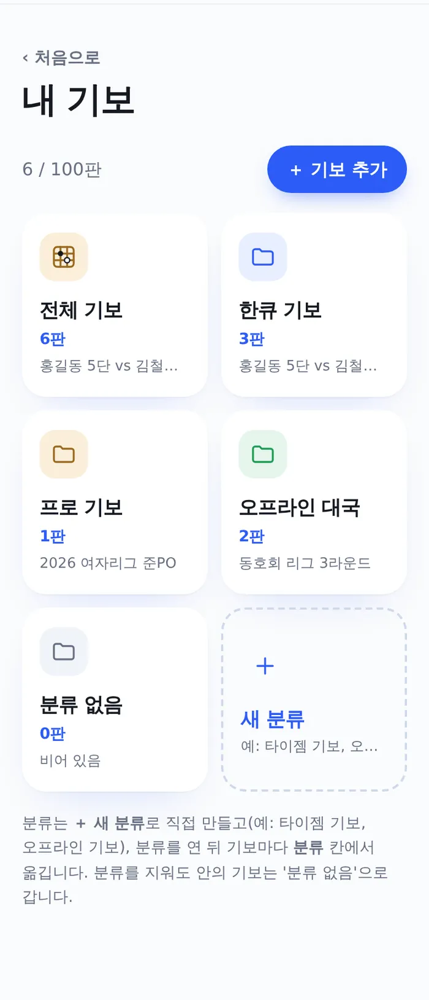
저장 창
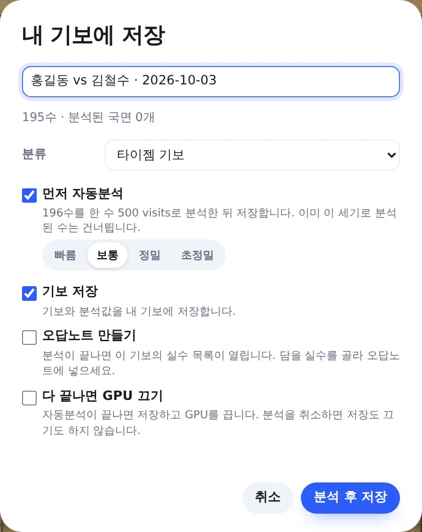
- 먼저 자동분석: 세기(빠름·보통·정밀·초정밀)를 고르면 그 세기로 아직 분석되지 않은 수만 분석한 뒤 저장합니다(분석 후 저장). 분석된 수가 하나도 없으면 처음부터 체크돼 있습니다. 이미 자동분석이나 대국 리포트가 돌고 있으면 세기 대신 진행 상황이 나오고, 체크해 두면 그 분석이 끝난 뒤 저장합니다(끝나면 저장). GPU에 연결돼 있지 않으면 흐리게 나와 고를 수 없습니다.
- 기보 저장 · 오답노트 만들기 중 체크한 것만 만듭니다. 오답노트를 체크하면 이 기보의 실수 목록이 열립니다.
- GPU가 켜져 있으면 다 끝나면 GPU 끄기도 보입니다. 이걸 켜면 끝난 뒤 고를 사람이 없을 수 있으므로, 오답노트 만들기도 체크했다면 목록을 고르지 않고 후보를 모두 담습니다(누구의 실수·실수 기준은 오답노트에 담기 창에서 마지막으로 고른 것). 오답노트를 체크하지 않으면 만들지 않습니다. 저장(과 오답노트)이 끝나면 GPU를 끕니다. 분석 중이면 분석이 끝나는 대로 합니다.
자세히: 기보 추가(GPU 없이 기록), 공유, SGF, 한큐 기보 불러오기
- ＋ 기보 추가: 빈 판과 기보 정보 창(바둑판 크기, 흑·백 이름, 날짜, 결과)이 열립니다. 판을 눌러 두고 내 기보 저장. GPU를 켜지 않아 요금이 들지 않습니다. 잘못 둔 수는 그 수에서 지우기.
- 공유: 목록의 공유 → 링크 만들기 → 복사(폰은 보내기…). 받은 사람은 로그인·GPU 없이 기보와 분석을 봅니다. 공유 끄기하면 링크가 막힙니다. 대국자 이름도 보이니 주의하세요.
- 다시 저장: 내 기보에서 연 기보는 덮어쓰기 / 새로 저장을 고릅니다. 삭제는 되돌릴 수 없습니다.
- SGF: 기보 메뉴(휴대폰은 메뉴 → 기보·SGF 파일)에서 SGF 열기·저장·복사·붙여넣기. 저장한 SGF에는 분석값도 들어 있어 다시 열면 그래프가 보입니다. PC에서는 SGF 파일을 분석 화면에 끌어다 놓아도 열립니다. 타이젬 기보(GIB)도 같은 방법으로 열 수 있습니다.
- 사진으로 배치 입력: 기보 메뉴(휴대폰은 메뉴 → 기보)의 사진으로 배치 입력…으로 실제 바둑판을 찍은 사진이나 바둑 앱 화면 캡처를 고르면, 판의 위치와 줄 수(19·13·9줄)를 자동으로 찾고 돌을 읽어 반듯하게 편 사진 위에 보여 줍니다(네모 = 읽은 돌). 틀린 곳은 눌러서 빈 곳 → 흑 → 백으로 고치고, 격자가 어긋났으면 모서리 다시로 네 귀를 끌어 맞춥니다. 둘 차례를 고르고 이 배치로 열기를 누르면 그 배치에서 분석을 시작할 수 있습니다. 사진은 서버로 보내지 않고 이 화면 안에서만 읽습니다. 수순은 알 수 없어 배치만 들어가고, 판 일부만 찍힌 사진이나 화면을 비스듬히 찍은 사진은 직접 맞춰야 할 수 있습니다.
- 기보 불러오기(한큐바둑): 닉네임을 검색하면 최근 대국 약 100판이 나오고, 누르면 바둑판에 열립니다. 타이젬 개인 기보는 PC에서는 윈도우 PC 앱이 자동으로 넣어 주고, 폰은 타이젬 앱의 기보 메뉴 → SGF 내보내기(폰의 Download/tygem 폴더에 저장) 뒤 SGF·GIB 열기나 기보 분석의 파일 추가로 여세요.
- 기보를 누르면 대국자 이름·결과를 판 옆 대국자 칸이나 파일 → 기보 정보…에서 고칠 수 있습니다.
기보 분석
기보 여러 개를 분석 화면 없이 한꺼번에 분석해 내 기보에 저장합니다. 메뉴 기보 → 맨 위 기보 분석.
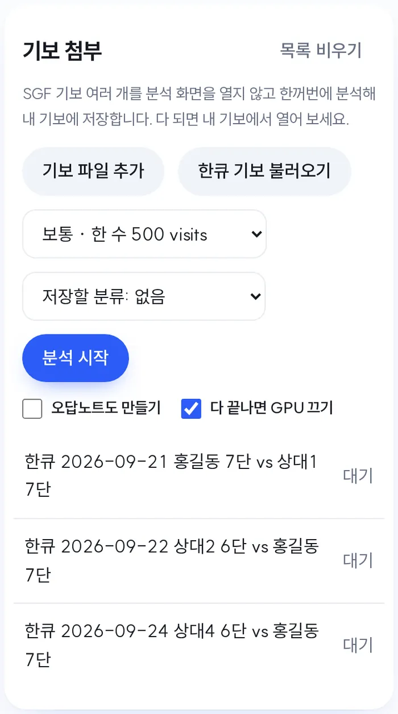
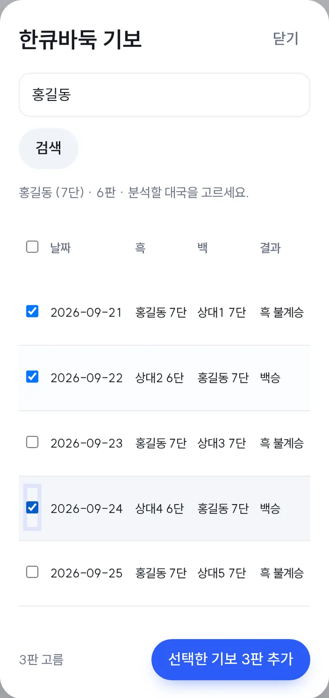
- 기보 파일 추가로 SGF(타이젬 GIB도 됨)를 여러 개 고르거나, 한큐 기보 불러오기로 대국을 체크해 넣습니다. PC에서는 파일을 화면에 끌어다 놓아도 됩니다.
- 세기와 저장할 분류를 고릅니다.
- 분석 시작. GPU를 빌리는 중이면 준비되면 분석 시작으로 예약됩니다.
자세히: 오답노트도 만들기, 다 끝나면 GPU 끄기, 취소
- 오답노트도 만들기: 저장하면서 실수를 바로 담습니다. 누구의 실수(흑·백 / 흑만 / 백만 / 내 이름 쪽만 — 적은 이름이 대국자에 든 쪽)와 기준을 고릅니다.
- 다 끝나면 GPU 끄기(기본 켬): 모두 끝나면 GPU를 끄고 삭제합니다. 분석 취소로 멈췄을 때는 끄지 않습니다.
- 취소해도 이미 저장된 기보는 남고, 다시 시작하면 저장 안 된 것만 분석합니다.
- 한큐 기보는 분석 화면의 기보 불러오기처럼 본선만 분석하고, 제목은 대국자·날짜입니다. 이미 넣은 대국은 "추가됨"으로 보입니다.
- 같은 파일을 다시 분석하면 내 기보에 한 판 더 저장됩니다.
학습방 · 오답노트
분석한 기보의 실수를 문제로 모아 다시 풉니다. GPU 없이 풀 수 있습니다.
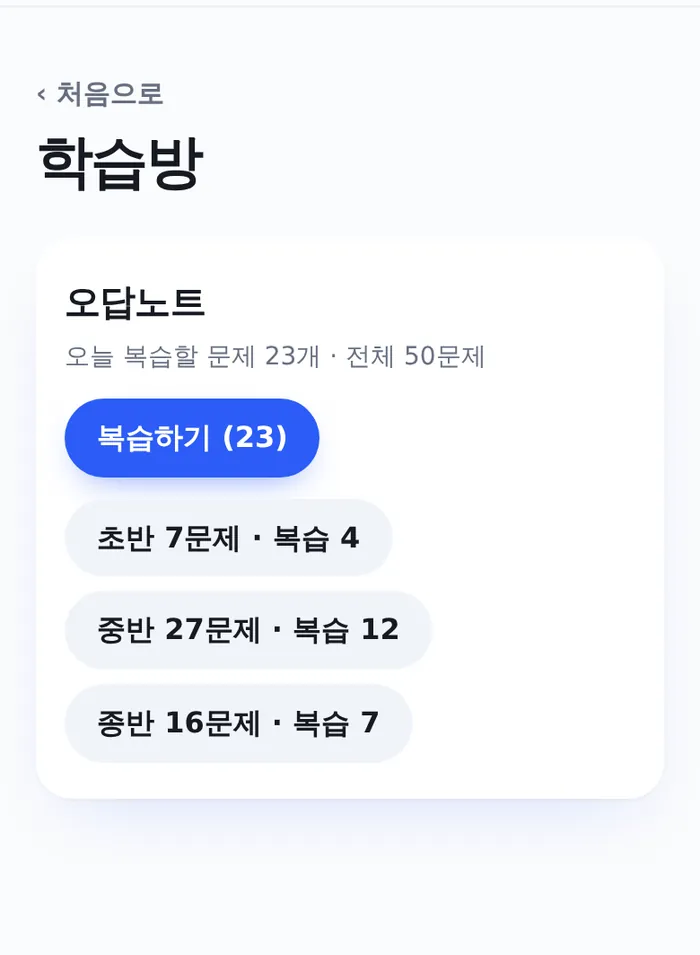
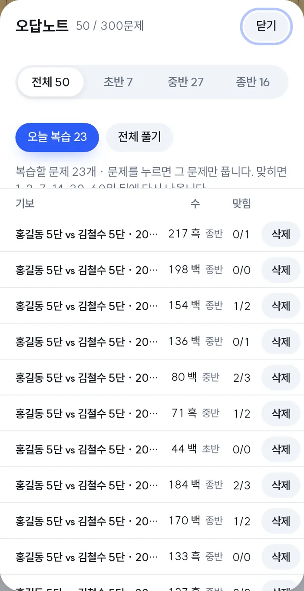
담기
- 기보를 자동분석한 뒤 내 기보 저장에서 오답노트 만들기(또는 기보 메뉴 오답노트에 담기, 휴대폰은 메뉴 → 복기).
- 누구의 실수인지와 기준(작은 실수까지 2집·5% / 실수 4집·10% / 큰 실수만 8집·20%)을 고르고, 담을 수를 체크합니다.
- 이미 결판난 국면의 수는 빠집니다(이긴 판을 한 수로 뒤집은 수는 남음). 계정마다 300문제까지.
풀기
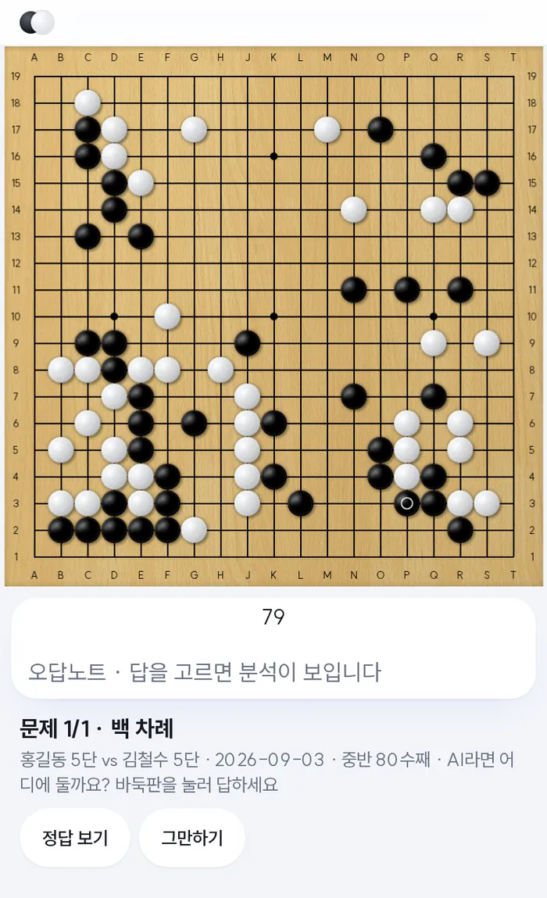
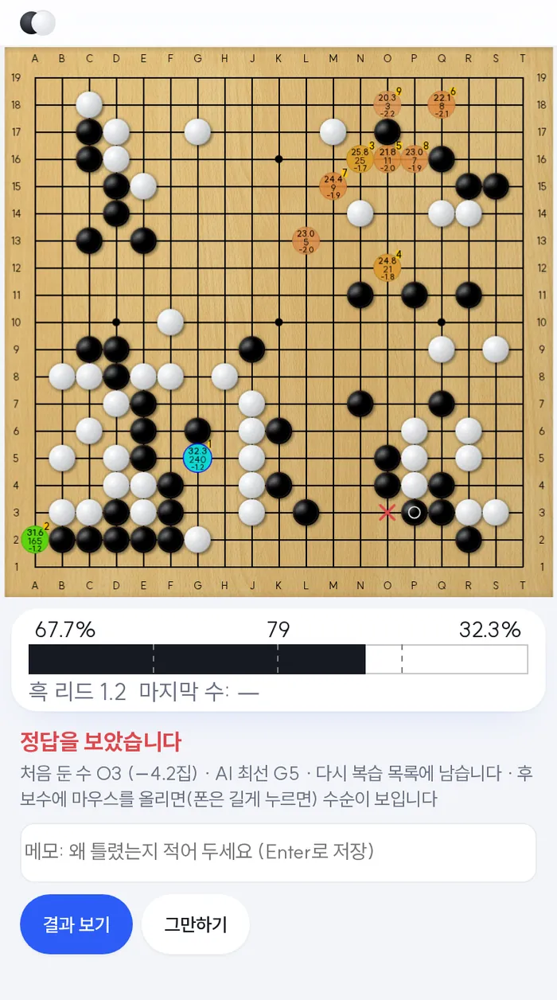
- AI 1순위나, 그와 1.5집(승률 3%) 안쪽인 수를 두면 정답입니다.
- 맞히면 1·3·7·14·30·60일 뒤에 다시 나오고, 틀리면 바로 복습 목록에 남습니다.
- 아래 칸에 메모를 적어 두면 문제와 함께 저장됩니다. 그만하기를 누르면 보던 기보로 돌아갑니다.
- 지우기: 목록 왼쪽 칸을 체크하고 선택 N개 삭제를 누르면 한꺼번에 지웁니다. 맨 위 칸은 지금 보이는 단계의 문제를 모두 고르고, PC에서는 Shift를 누른 채 체크하면 그 사이를 다 고릅니다. PC는 줄 끝 삭제로 하나씩도 지울 수 있습니다.
앱 설치 · 준비 알림
홈 화면에 앱처럼 설치하면 주소창 없이 열리고, GPU가 준비되면 알림을 받을 수 있습니다.
| 기기 | 설치 방법 |
|---|---|
| 안드로이드 | 크롬에서 사이트를 열고 설치 칸의 설치 또는 메뉴(⋮) → 앱 설치 |
| 아이폰·아이패드 | Safari 공유 버튼(□↑) → 홈 화면에 추가 |
| 윈도우 PC | 설치 칸의 다운로드(또는 내 정보 → 윈도우 PC 앱 받기) → 받은 KataGoCloud.exe 실행. 아래 윈도우 PC 앱을 보세요. |
| 맥 등 다른 PC | Chrome·Edge 주소창 오른쪽 설치 아이콘(⊕) |
- 설치 칸은 로그인 화면과 홈 아래에 있고, 설치한 앱 안에서는 보이지 않습니다.
- 준비 알림: GPU를 시작할 때 알림을 허용하거나 내 GPU 칸의 🔔 준비되면 알림 받기. 준비가 끝나거나 실패하면 알림이 오고 탭 제목에 ●가 붙습니다(사이트 탭이 열려 있는 동안). 아이폰은 설치한 앱에서만 알림이 옵니다.
- 설치한 앱에서는 분석 화면이 같은 창에서 열리고, 왼쪽 위 ‹ 홈으로 돌아옵니다.
윈도우 PC 앱
사이트가 주소창 없는 앱 창으로 열리고, 타이젬 기보 자동 동기화가 들어 있습니다. Windows 10·11(64비트)에서 씁니다.
- 설치: 받은 KataGoCloud.exe를 실행하면 설치되고 바탕화면에 KataGo Cloud가 생깁니다. 관리자 권한은 필요 없습니다. 서명되지 않은 프로그램이라 'Windows의 PC 보호' 창이 뜰 수 있습니다. 그때는 추가 정보 → 실행을 누르세요. 새 버전도 같은 방법으로 받아 실행하면 바뀝니다.
- 로그인: 앱 창에서 처음 한 번 로그인하면 다음부터는 바로 열립니다.
- 타이젬 기보 자동 동기화: 내 정보의 스위치로 켜고 끕니다(앱에서만 보임). 켜 두면 이 PC의 타이젬 기보 폴더를 스스로 찾아, 대국이 저장되는 즉시 내 기보의 타이젬 기보 분류에 넣습니다. 처음에는 최근 20판을 넣고, 그 뒤로는 새 대국만 넣습니다. 폴더를 못 찾으면 스위치 아래 폴더 직접 지정으로 정합니다.
- 창을 닫으면: 동기화가 켜져 있으면 시계 옆 아이콘으로 남아 계속 넣고, 윈도우를 켤 때도 아이콘으로 시작합니다. 아이콘을 누르면 창이 다시 뜨고, 오른쪽 클릭 → 끝내기로 끕니다. 동기화를 끄면 창을 닫을 때 앱이 끝납니다.
- PC에서 기보 파일을 지워도 내 기보의 기보는 지워지지 않습니다. 사이트에서 분석한 기보나 지운 기보는 앱이 다시 바꾸거나 되살리지 않습니다.
여러 기기에서 함께 보기
한 계정의 분석 판은 하나입니다. 노트북과 폰에서 같이 열면 같은 판이 서로 따라 움직입니다.
- 폰에서도 같은 계정으로 로그인한 뒤 GPU 대여 → 분석 화면 열기.
- 한쪽에서 두거나 수를 넘기면 다른 기기도 같은 수로 갑니다. 실시간 분석은 판마다 하나만 돕니다.
- 연결 상태에 붙어 있는 기기 N대가 보입니다. 기기 수 제한은 없습니다.
내 정보
메뉴 내 정보에서 합니다. 휴대폰 설정 화면처럼 줄을 누르면 열립니다.
- 이름 바꾸기 · 비밀번호 변경(현재 비밀번호 확인, 8자 이상)
- 화면 — 기기 설정 / 밝게 / 어둡게. 기기 설정을 고르면 휴대폰·PC의 다크 모드를 따릅니다. 이 기기에서만 적용되고 분석 화면도 같이 바뀝니다.
- 알림 — 켜면 GPU 준비 완료·준비 실패, GPU 종료(잔액이 떨어져서, 10분 동안 입력이 없어서, 최대 사용 시간이 되어서 꺼진 경우 포함), 잔액이 5분 안쪽으로 남았을 때, 충전 결과가 휴대폰 알림으로 옵니다. 끄면 어느 기기에도 알림이 가지 않습니다. 휴대폰은 설치한 앱(홈 화면의 KataGo Cloud)에서 켜 두는 것이 가장 확실합니다.
- 충전·사용 내역 — GPU를 쓴 기록(한 번에 한 줄)과 충전·환불 기록
- 회원 탈퇴 — 켜진 GPU를 먼저 끄세요. 남은 잔액 환불은 탈퇴하기 전에 관리자에게 요청하세요.
자주 묻는 질문
"분석 화면 열기"가 안 나타나요.
보통 1~3분 걸립니다. ⚡가 붙은 GPU는 보통 1분 안팎이고, 처음 쓰는 서버는 1~2분 더 걸릴 수 있습니다. 너무 오래 걸리면 GPU가 스스로 꺼지고 "실패"로 표시되며 요금은 자동으로 돌려드립니다. 다른 GPU로 다시 시작하세요.
연결이 끊겼다고 나와요.
폰 화면이 꺼지거나 네트워크가 바뀌면 잠깐 끊겼다가 자동으로 다시 붙습니다. 계속 끊겨 있으면 GPU 대여 화면에서 GPU가 아직 "사용 가능"인지 보세요. 10분 동안 쓰지 않아 자동으로 꺼졌을 수 있습니다.
분석이 느려요.
위쪽 visits/s를 보세요. 자동분석·대국 리포트가 함께 돌면 GPU를 나눠 써서 느려집니다. 더 빠른 GPU(5070 Ti, 5090 등)나 작은 모델을 고르면 빨라집니다.
탭을 닫았는데 요금이 나가나요?
탭을 닫아도 GPU는 켜져 있다가 10분 동안 분석이 없으면 스스로 꺼집니다. 그 사이 요금은 나가니 다 썼으면 GPU 종료를 누르세요.
분석 결과를 나중에 다시 보고 싶어요.
내 기보 저장을 쓰세요. 메뉴 '기보'에서 GPU 없이 그래프와 후보수를 볼 수 있습니다. 파일로 두려면 SGF 저장.
오답노트에 문제가 너무 많이(적게) 들어가요.
담기 창의 기준을 바꿔 보세요: 작은 실수까지(2집·5%) / 실수(4집·10%) / 큰 실수만(8집·20%). 이미 결판난 국면의 수는 자동으로 빠집니다. 담을 수만 체크해서 넣을 수도 있습니다.
YZY와 결과가 조금 달라요.
모델과 탐색량(visits)이 같아야 결과가 비슷합니다. 같은 모델을 고르고 세기를 보통(500 visits)으로 맞춰 비교해 보세요.